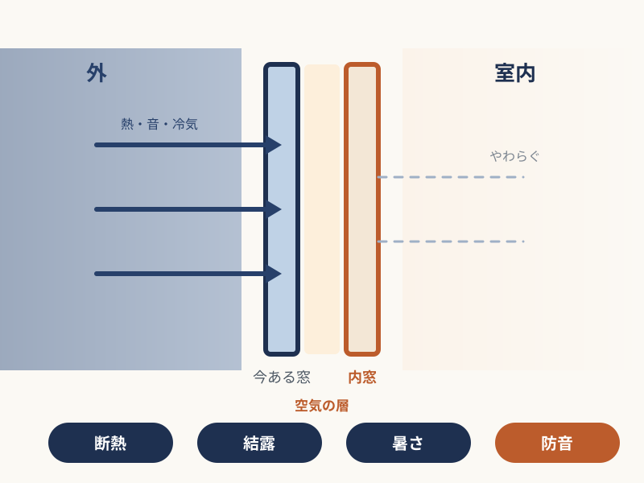
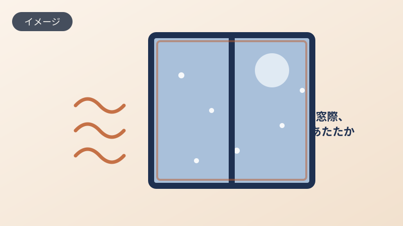
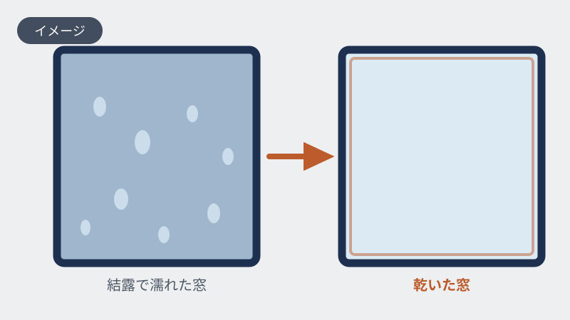
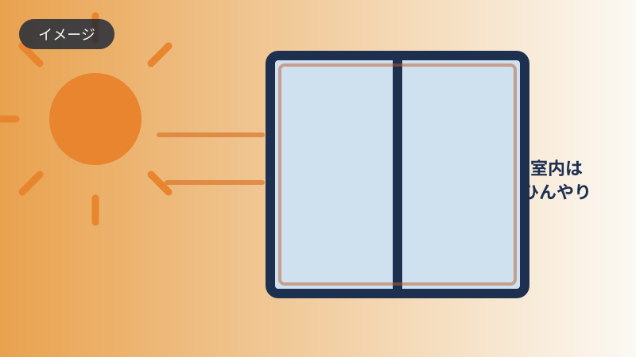
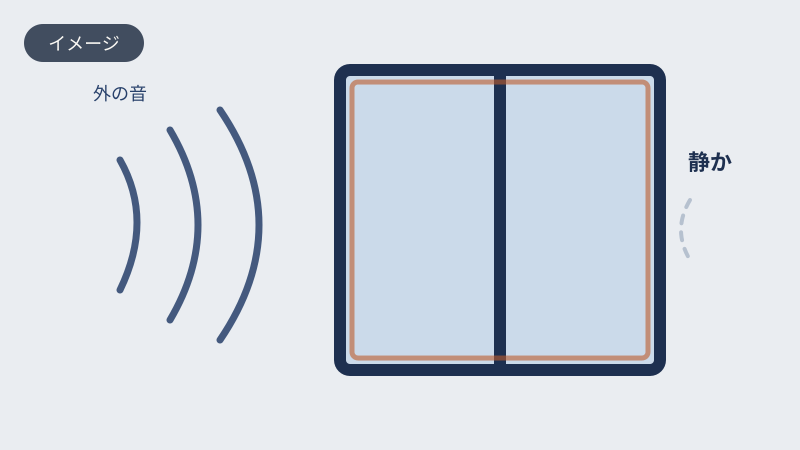
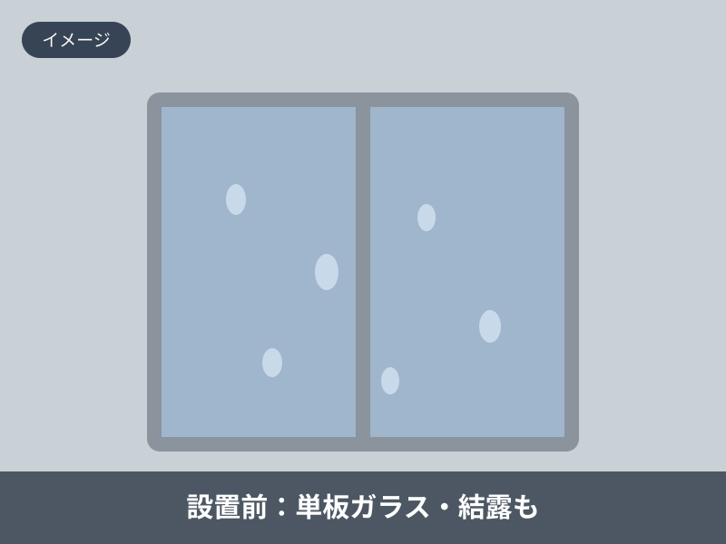
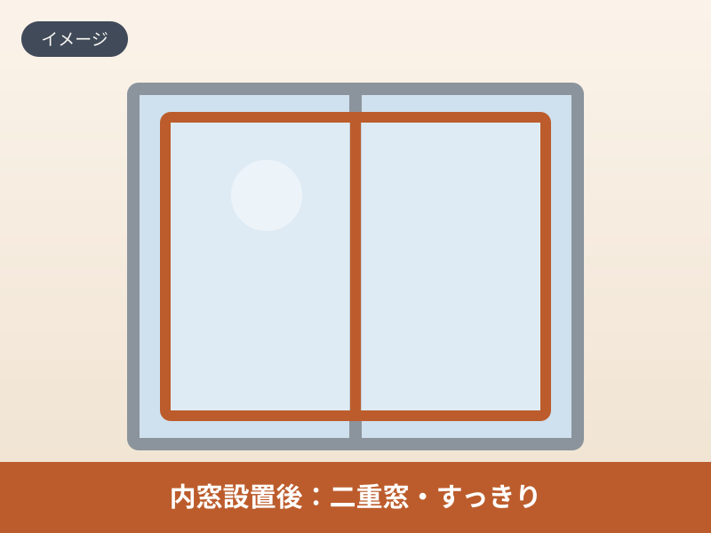

この記事の内容（タップで開く）
こんな窓の不満、ありませんか
冬の朝、窓際に立つとひやっとする。窓ガラスもサッシも水滴でびっしりで、毎朝それを拭くのが小さな仕事になっている。夏は夏で、西日が入る部屋だけ温度が上がってエアコンがなかなか効かない。
ひとつひとつは、大声で困っていると言うほどではありません。だから後回しになります。でも、こういう小さな不満は、たいてい同じところから来ています。
- 冬、窓際が底冷えして暖房がなかなか効かない
- 朝、窓ガラスや窓枠の結露がひどく、カビも気になる
- 夏の西日で、その部屋だけ暑くなる
- 外を走る車や電車の音が気になって落ち着かない
- 光熱費が思ったより下がらない
寒さ、結露、暑さ、音。別々のことのようで、原因の多くは「窓」に集まっています。次は、なぜ窓を変えると、これらがまとめてやわらぐのかをお話しします。
なぜ窓を変えると、まとめてやわらぐのか
家の中で、熱と音がいちばん出入りしやすい場所が窓です。壁にはある程度の厚みがありますが、窓は一枚のガラスとサッシの隙間。冬はここから暖かさが逃げ、夏は外の熱が入り、外の音もそのまま伝わってきます。昔ながらのアルミサッシと単板ガラスの組み合わせは、とくにその出入りが大きくなります。

逆にいえば、窓さえ手を打てば、いくつもの不満に一度に効きます。そして今は、その窓の断熱リフォームを国が後押ししています。
先進的窓リノベ2026とは
先進的窓リノベ2026は、住まいの省エネを進めるために、断熱性の高い窓へのリフォームを国が補助する制度です。今ある窓の内側に窓を足す「内窓」や、窓そのものを断熱性の高いものに替える「外窓交換」などが対象になります。
むずかしい制度に見えますが、対象になるかどうかや、いくらくらい戻るかの目安は、窓の写真を見せていただければこちらでお調べします。申請の手続きも、私たちがお手伝いします。お客様にご用意いただくものは、その都度ご案内します。
窓を変えると変わること
窓の断熱リフォームの良いところは、ひとつの工事で、いくつもの悩みが一緒にやわらぐことです。補助金を使って、まとめて手を打つ方が増えています。

冬の底冷えがやわらぐ
窓を二重にしたり断熱窓に替えたりすると、窓から逃げる熱が減ります。暖房の効きがよくなり、窓際の冷えがやわらぎます。

朝の結露が出にくくなる
窓の内側に空気の層をつくると、室内側のガラスが冷えにくくなり、結露が出にくくなります。窓まわりのカビや、毎朝の拭き取りの手間も減ります。

夏の暑さもやわらぐ
断熱性の高い窓は、外の熱が室内に伝わりにくくなります。夏の西日による暑さがやわらぎ、冷房の効きもよくなります。

外の音も気になりにくくなる
窓を二重にすると、外から入る音もやわらぎます。とくに防音ガラスと組み合わせると、車や電車の音が気になりにくくなる方が多くいらっしゃいます。
補助はどのくらい戻るのか
気になるのは、結局いくら戻るのか、だと思います。下は窓1つあたりと、1戸あたりの上限の目安です。ただし、これは仮の数値です。正式な補助額・条件は公式情報を確認のうえご案内します。
施工事例
どのくらい変わるのか、言葉より、現場で起きたことをお伝えするのが早いと思います。フクシマ建材で実際に施工した事例です。


線路沿いのマンションで、今ある窓の内側に
熊本駅の近く、線路沿いのマンションにお住まいの方からのご相談でした。日中も夜も電車が通り、音が気になって落ち着かないとのこと。今ある窓の内側に内窓を設置しました。工事は短時間で完了しています。
踏切のそばのピアノ室に、内窓を一枚
家のすぐ近くに踏切があり、カンカンという警告音が室内まで響いていたお宅です。ピアノの練習部屋として使うため、外の音を抑えたいというご相談でした。内窓に防音合わせガラスを組み合わせて設置しています。
このほかの事例も準備中です。あなたの窓に近い事例を、LINEでご紹介することもできます。
お客様の声
実際にお使いの方からいただいた声です。
取り付けた瞬間から、線路を走る電車の音がほとんど聞こえなくなりました。
熊本駅近くのマンションにお住まいのお客様
すぐ近くに踏切があるのですが、カンカンという警告音がほとんど聞こえなくなりました。
ピアノ室の防音対策でご利用のお客様
（断熱・結露・暑さに関するお客様の声を追加収集中です）
いずれもお客様個人の感想です。効果には個人差があり、結果を保証するものではありません。掲載は許諾と日付を確認のうえ確定します。
フクシマ建材が選ばれる理由
壁も床も壊さず、多くのお宅でその日のうちに完了します。先進的窓リノベ2026などの補助金にも対応し、申請の手続きもこちらでお手伝いします。専門用語をかみくだいて、分かりやすく丁寧にご説明するのが私たちのやり方です。
数値は当社の施工実績の集計です。九州での実績数や順位などの比較表記は、調査の主体・範囲・時点を確認のうえ掲載します（裏取り中）。
費用と自己負担のこと
窓のリフォーム費用は、窓のサイズや選ぶ製品によって変わります。下は内窓を付ける場合の目安です。ここから補助が差し引かれるため、実際のご負担はこれより下がります。
※ 税・工賃込みの目安で、補助を差し引く前の金額です。窓が大きいほど、また防音合わせガラスなど仕様を上げるほど高くなり、窓の数でも変わります。後から想定外の費用が出ないよう、正確な金額はお見積もりでお出しします。
相談から施工までの流れ
LINEで写真を送る
気になる窓の写真を送ってください。入力フォームは不要です。
概算と補助の目安をお返事
写真をもとに、おおよその費用と、使えそうな補助の目安をお伝えします。
現地調査・お見積もり
ご希望があれば、実際の窓を見て正確なお見積もりをお出しします。
申請・施工（2〜4時間）
補助金の申請手続きはこちらでお手伝いします。施工は壁も床も壊さず、多くのお宅でその日のうちに完了します。
よくあるご質問
LINE登録すると、しつこく連絡が来ませんか
確認なくこちらからお電話することはありません。やり取りはLINEの中だけで、営業の連絡を重ねることもしません。合わないと感じたら、いつでもブロック・退会していただけます。まずは見るだけ、という方も歓迎です。
うちは補助金の対象になりますか
お住まいの状況や窓の種類によって変わります。窓の写真を送っていただければ、対象になりそうかどうかをお調べしてお返事します。対象や金額には要件と審査があり、必ず一定額を受け取れるものではありません。
申請の手続きはむずかしくありませんか
補助金の申請は、私たちがお手伝いします。お客様にご用意いただく書類などは、その都度ご案内しますのでご安心ください。
いつまでに申し込めばよいですか
補助金は申請期間や予算の枠が決まっており、枠がうまると年度の途中でも受付が終わることがあります。お早めにご相談いただくのが安心です。正確な期間は公式情報を確認のうえご案内します。
賃貸でも取り付けできますか
賃貸の場合はオーナー様の許可が必要です。原状回復のご相談にも対応しますので、まずはお気軽にお問い合わせください。
工事は何時間かかりますか
内窓の場合、1窓あたりおよそ1時間です。多くのお宅は2〜4時間で完了します。外窓交換は窓により変わりますので、写真を見せていただければ目安をお伝えします。
見積もりは無料ですか。高い工事をすすめられませんか
お見積もりは無料です。ご予算やご希望をうかがったうえで、必要な分だけをご提案します。むやみに高い工事をおすすめすることはありません。費用の目安は、内窓なら小さい窓で8〜12万円ほど（税・工賃込／窓のサイズで変わります）。くわしくはこの記事の費用と自己負担のことにも載せています。
フクシマ建材について
窓・内窓・玄関ドアのリフォームを専門に、九州一円で施工しています。理念は、分かりやすく、丁寧に。お客様のお困りごとを、専門外の方にも伝わる言葉で解決することを大切にしています。
九州プラスト（フクシマ建材株式会社）
補助金が使えるうちに。
窓の不満を、今年こそ。
うちの窓はどうだろう、対象になるのかな、という段階で大丈夫です。
写真を1枚送っていただくところから、はじめられます。